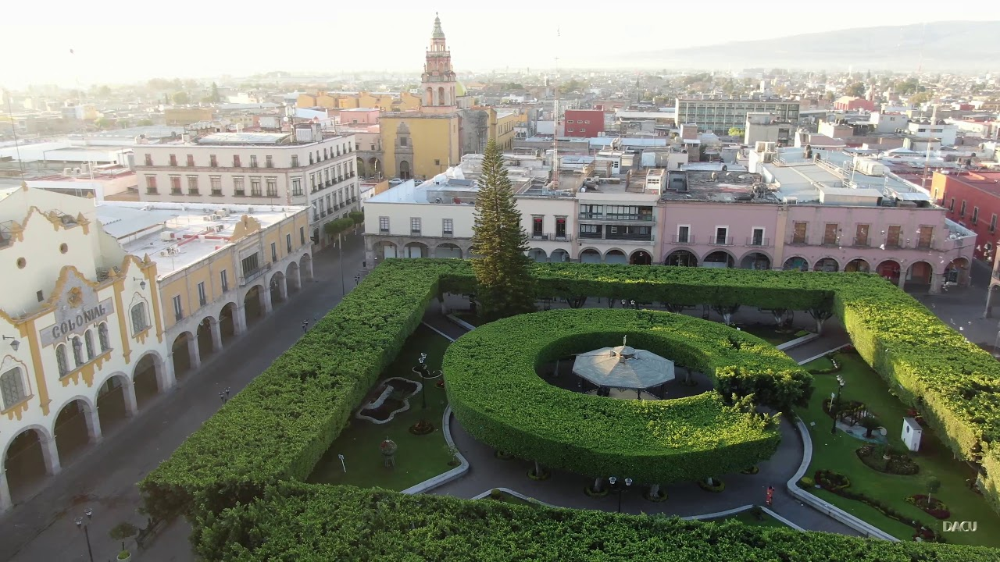

Estamos ubicados en el jardín principal de Celaya,Gto. sobre la calle Alvaro Obregón, frente al portal Independencia.
Horarios: 12:00, 14:00, 16:15, 18:00 y 19:30.
Compra tus boletos en el modulo de servicio junto al Tranvía Celaya.